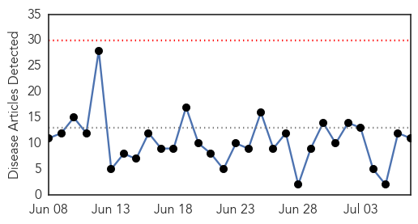
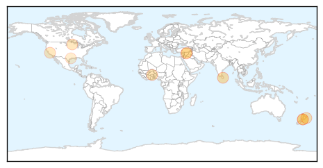
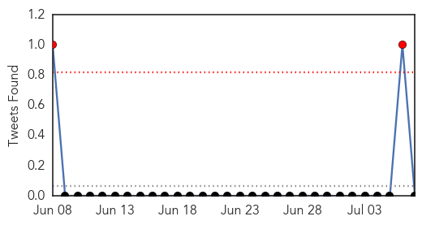
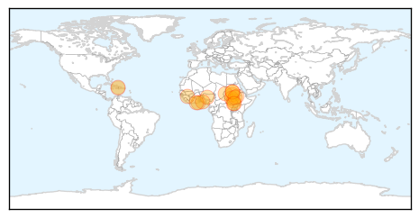

Influenza
30-Day Web Trend
0 alerts, 0 warnings

30-Day Twitter Trend
0 alerts, 0 warnings

Article Locations
Article Confidences

Top Articles:
- 0.995
- Flu Scan for Jul 06, 2015
- 0.914
- flu season?
- 0.898
- Ansun BioPharma Publishes Effects of FluDase™ on Drug Resistant Flu
- 0.852
- Record presentations to Hawke’s Bay Emergency Department
- 0.840
- Parliament calls for urgent steps to contain Avian flu
- 0.754
- US poultry industry devastated by bird flu
- 0.751
- July 6, 2015 Archives
- 0.751
- July 6, 2015 Archives
- 0.751
- July 6, 2015 Archives
- 0.735
- flu season?
- 0.573
- Sick doctors admit to spreading infections at work
Top Tweets:
-
No tweets found for Jul 07, 2015
Cholera
30-Day Web Trend
0 alerts, 0 warnings

30-Day Twitter Trend
1 alerts, 0 warnings

Article Locations
Article Confidences

Top Articles:
- 1.000
- Cholera kills 32 in South Sudan
- 1.000
- The most from the coast
- 0.998
- Ministry of Health, WHO and partners score some victories in responding to cholera outbreak in South Sudan - South Sudan
- 0.994
- Cholera kills 32 in South Sudan, education key to stemming outbreak: UN
- 0.992
- 08.07.98 Cafes close over cholera fears
- 0.992
- Prestea Records 13 Cholera Cases, One Dead
- 0.992
- 8 die of cholera in northern Nigeria: official
- 0.992
- 8 die of cholera in northern Nigeria: official - Xinhua
- 0.988
- South Sudan cholera outbreak: 20 percent of deaths are in young children
- 0.987
- Cholera kills 32 in South Sudan, says UN
- 0.986
- 20 pct cholera deaths in South Sudan seen in children under five: UNICEF - Xinhua
- 0.983
- The most from the coast
- 0.941
- Cholera has killed 32 people in South Sudan
- 0.925
- Health centers not ready to battle cholera outbreak
- 0.875
- Children Make Up One Fifth Of Cholera Deaths In South Sudan: UNICEF
- 0.840
- S. Sudan Fighting Displaces Over 2 Million
- 0.550
- South Sudan UN Mission deplores killing of civilian in Organization compound
- 0.543
- Why Can’t We Stop Cholera In Haiti? « Berman Institute Bioethics Bulletin
- 0.533
- South Sudan: UN Mission deplores killing of civilian in Organization compound
Top Tweets:
-
No tweets found for Jul 07, 2015